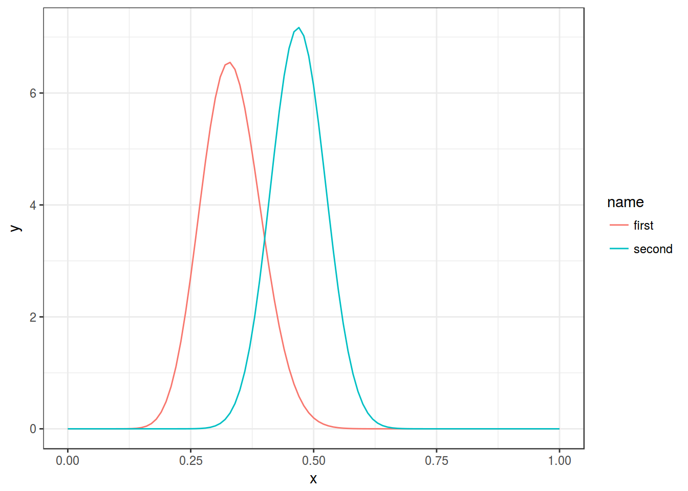
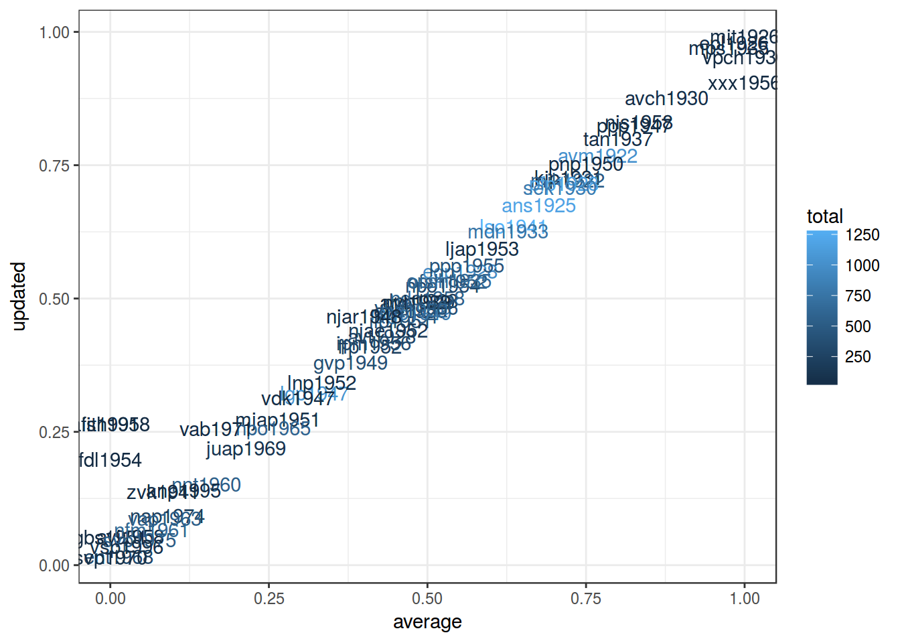

Lab 14. Empirical Bayes
Assignment link
library(tidyverse)1. Working with beta destriution
x <- seq(0, 1, 0.01)
alpha <- 20
beta <- 40
data.frame(x, y = dbeta(x, alpha, beta)) %>%
ggplot(aes(x, y))+
geom_line()+
geom_vline(xintercept = qbeta(0.95, alpha, beta), linetype = 2)+
theme_bw()x <- seq(0, 1, 0.01)
alpha_1 <- 20
beta_1 <- 40
alpha_2 <- 38
beta_2 <- 43
df_1 <- data.frame(x, y = dbeta(x, alpha_1, beta_1), name = "first")
df_2 <- data.frame(x, y = dbeta(x, alpha_2, beta_2), name = "second")
rbind(df_1, df_2) %>%
ggplot(aes(x, y, color = name))+
geom_line()+
theme_bw()
2. Chechov data
chekhov <- read.csv("https://goo.gl/KqwWTB")
chekhov %>%
mutate(average = n_i/(n_i+n_V)) %>%
ggplot(aes(average))+
geom_histogram(bins = 9)
chekhov %>%
mutate(average = n_i/(n_i+n_V)) %>%
summarise(mu = mean(average),
var = var(average)) ->
mu_varUse mean and variance for fitting data.
# function from https://stats.stackexchange.com/a/12239
estBetaParams <- function(mu, var) {
alpha <- ((1 - mu) / var - 1 / mu) * mu ^ 2
beta <- alpha * (1 / mu - 1)
return(params = list(alpha = alpha, beta = beta))}
prior <- estBetaParams(mu_var$mu, mu_var$var)
x <- seq(0, 1, 0.01)
alpha <- prior$alpha
beta <- prior$beta
alpha_2 <- 161.9079+prior$alpha
beta_2 <- 802.4302+prior$beta
df_1 <- data.frame(x, y = dbeta(x, alpha, beta), destribution = "prior")
df_2 <- data.frame(x, y = dbeta(x, alpha_2, beta_2), destribution = "posterior")
rbind(df_1, df_2) %>%
ggplot(aes(x, y, color = destribution))+
geom_line()+
theme_bw()alpha_2 <- 161.9079+108
beta_2 <- 802.4302+514
df_1 <- data.frame(x, y = dbeta(x, alpha, beta), destribution = "prior")
df_2 <- data.frame(x, y = dbeta(x, alpha_2, beta_2), destribution = "posterior")
q_025 <- qbeta(0.025, alpha_2, beta_2)
q_975 <- qbeta(0.975, alpha_2, beta_2)
rbind(df_1, df_2) %>%
ggplot(aes(x, y, color = destribution))+
geom_line()+
geom_vline(xintercept = qbeta(0.025, alpha_2, beta_2), linetype = 2)+
geom_vline(xintercept = qbeta(0.975, alpha_2, beta_2), linetype = 2)+
theme_bw()3. Ustja data
ustja <- read.csv("https://goo.gl/aQ7rbM", sep = "\t")
ustja %>%
mutate(average = cons/total) %>%
ggplot(aes(average))+
geom_histogram(bins = 9)ustja %>%
mutate(average = cons/total) %>%
summarise(mu = mean(average),
var = var(average)) ->
mu_var
prior <- estBetaParams(mu_var$mu, mu_var$var)
ustja %>%
mutate(average = cons/total,
updated = (cons + prior$alpha)/(total + prior$beta)) %>%
ggplot(aes(average, updated, color = total, label = speaker))+
geom_text()+
theme_bw()
ustja %>%
mutate(average = cons/total,
updated = (cons +9415)/(total + 9415+10052)) %>%
ggplot(aes(average, updated, color = total, label = speaker))+
geom_text()+
theme_bw()